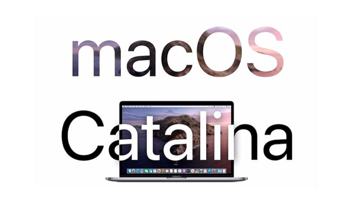
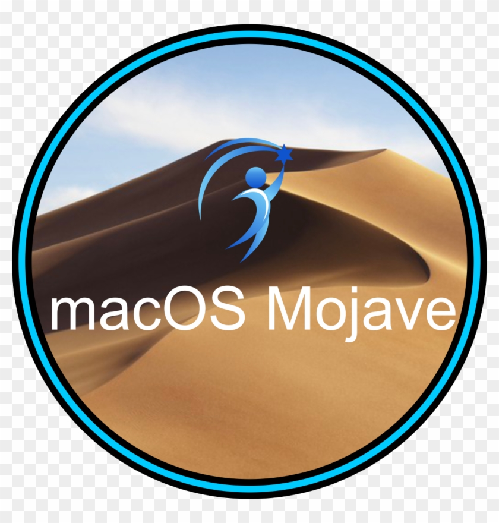
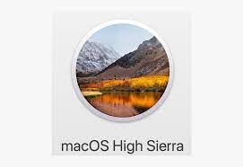
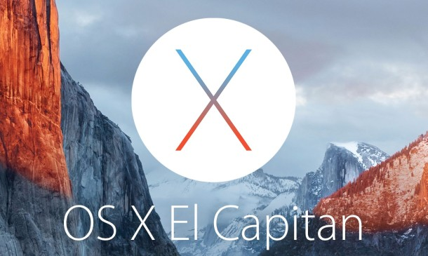
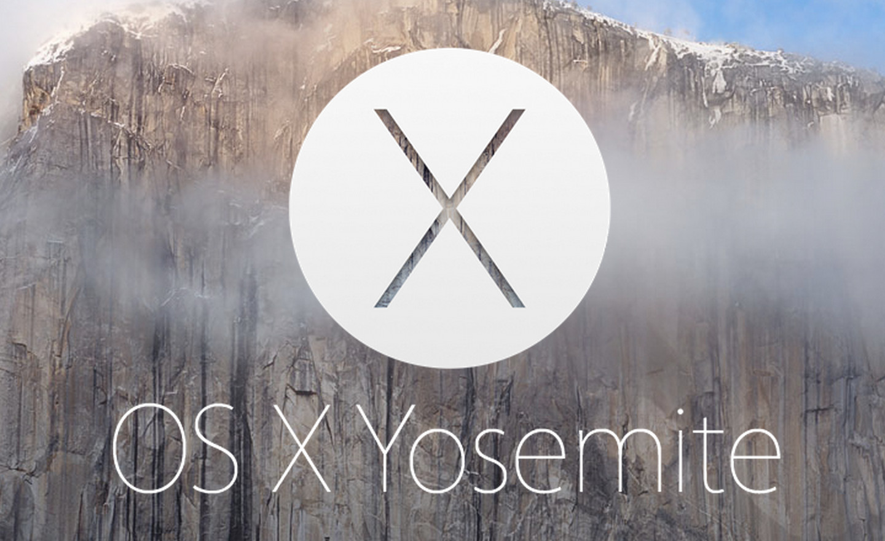
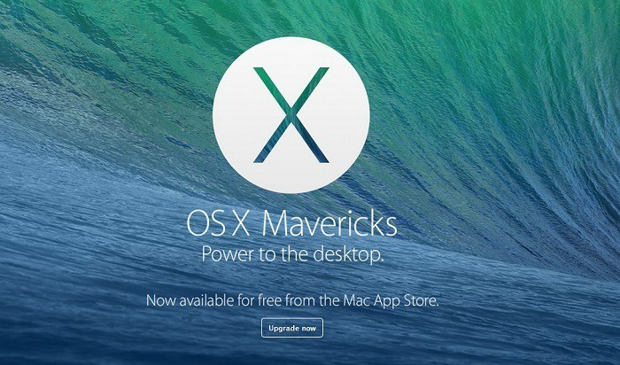

An operating system (OS) is system software that manages computer hardware, software resources, and provides common services for computer programs. Time-sharing operating systems schedule tasks for efficient use of the system and may also include accounting software for cost allocation of processor time, mass storage, printing, and other resources. For hardware functions such as input and output and memory allocation, the operating system acts as an intermediary between programs and the computer hardware, [1][2] although the application code is usually executed directly by the hardware and frequently makes system calls to an OS function or is interrupted by it. Operating systems are found on many devices that contain a computer – from cellular phones and video game consoles to web servers and supercomputers. The dominant general-purpose[3] desktop operating system is Microsoft Windows with a market share of around 76.45%. macOS by Apple Inc. is in second place (17.72%), and the varieties of Linux are collectively in third place (1.73%).[4] In the mobile sector (including smartphones and tablets), Android's share is up to 72% in the year 2020.[5] According to third quarter 2016 data, Android's share on smartphones is dominant with 87.5 percent with also a growth rate of 10.3 percent per year, followed by Apple's iOS with 12.1 percent with per year decrease in market share of 5.2 percent, while other operating systems amount to just 0.3 percent.[6] Linux distributions are dominant in the server and supercomputing sectors. Other specialized classes of operating systems (special-purpose operating systems)[3][7]), such as embedded and real-time systems, exist for many applications. Security-focused operating systems also exist. Some operating systems have low system requirements (e.g. light-weight Linux distribution). Others may have higher system requirements.
| Operating system | symbol | link | GUI |
|---|---|---|---|
| macOs | |
macOs | |
| macOS | Latest version |
|---|---|
| macOS Big Sur | 11.4 |
| macOS Catalina | 10.15.7 |
| macOS Mojave | 10.14.6 |
| macOS High Sierra | 10.13.6 |
| macOS Sierra | 10.12.6 |
| OS X El Capitan | 10.11.6 |
| OS X Yosemite | 10.10.5 |
| OS X Mavericks | 10.9.5 |
| OS X Mountain Lion | 10.8.5 |
macOS Big Sur (version 11) is the 17th and current major release of macOS, Apple Inc.'s operating system for Macintosh computers, and is the successor to macOS Catalina (version 10.15). It was announced at Apple's Worldwide Developers Conference (WWDC) on June 22, 2020,[7] and was released to the public on November 12, 2020.[8][7][9] macOS Big Sur features a user interface redesign that features new blurs to establish a visual hierarchy and also includes a revamp of the Time Machine backup mechanism. It is also the first macOS version to support Macs with ARM-based processors. To mark the transition, the operating system's major version number was incremented, for the first time since 2000, from 10 to 11.[10][11] The operating system is named after the coastal region of Big Sur in the Central Coast of California.

macOS Catalina (version 10.15) is the sixteenth major release of macOS, Apple Inc.'s desktop operating system for Macintosh computers. It is the successor to macOS Mojave and was announced at WWDC 2019 on June 3, 2019 and released to the public on October 7, 2019. Catalina is the first version of macOS to support only 64-bit applications and the first to include Activation Lock.[3][4] It is also the last version of macOS to have the version number prefix of 10. Its successor, Big Sur, is version 11.[5] macOS Big Sur, released on November 12, 2020, succeeded macOS Catalina.[6] The operating system is named after Santa Catalina Island, which is located off the coast of southern California.
macOS Mojave (version 10.14) is the fifteenth major release of macOS, Apple Inc.'s desktop operating system for Macintosh computers. Mojave was announced at Apple's Worldwide Developers Conference on June 4, 2018, and was released to the public on September 24, 2018. The operating system's name refers to the Mojave Desert and is part of a series of California-themed names that began with OS X Mavericks.[3] It succeeded macOS High Sierra and was followed by macOS Catalina. macOS Mojave brings several iOS apps to the desktop operating system, including Apple News, Voice Memos, and Home. It also includes a much more comprehensive "dark mode", is the final version of macOS to support 32-bit application software,[4][5] and is also the last version of macOS to support the iPhoto app, which had already been superseded in OS X Yosemite (10.10) by the newer Photos app. Mojave was well received and was supplemented by point releases after launch.
macOS High Sierra (version 10.13) is the fourteenth major release of macOS, Apple Inc.'s desktop operating system for Macintosh computers. macOS High Sierra was announced at the WWDC 2017 on June 5, 2017[2] and was released on September 25, 2017. The name "High Sierra" refers to the High Sierra region in California. Like with Snow Leopard, Mountain Lion and El Capitan, the name also alludes to its status as a refinement of its predecessor, focused on performance improvements and technical updates rather than user features. Among the apps with notable changes are Photos and Safari.
OS X El Capitan (version 10.11) is the twelfth major release of macOS (named OS X at the time of El Capitan's release), Apple Inc.'s desktop and server operating system for Macintosh. It focuses mainly on performance, stability, and security.[4] Following the Northern California landmark-based naming scheme introduced with OS X Mavericks, El Capitan was named after a rock formation in Yosemite National Park. El Capitan is the final version to be released under the name OS X. OS X El Capitan received far better reviews than did Yosemite. The first beta of OS X El Capitan was released to developers shortly following the WWDC keynote on June 8, 2015.[5] The first public beta was made available on July 9, 2015.[6] There were multiple betas released after the keynote. OS X El Capitan was released to end users on September 30, 2015, as a free upgrade through the Mac App Store.
OS X Yosemite (version 10.10) is the eleventh major release of macOS, Apple Inc.'s desktop and server operating system for Macintosh computers. OS X Yosemite was announced and released to developers on June 2, 2014, at WWDC 2014 and released to public beta testers on July 24, 2014. Yosemite was released to consumers on October 16, 2014.[4] Following the Northern California landmark-based naming scheme introduced with OS X Mavericks, Yosemite is named after the national park.
OS X Mavericks (version 10.9) is the tenth major release of macOS, Apple Inc.'s desktop and server operating system for Macintosh computers. OS X Mavericks was announced on June 10, 2013, at WWDC 2013, and was released on October 22, 2013 worldwide. The update emphasized battery life, Finder improvements, other improvements for power users, and continued iCloud integration, as well as bringing more of Apple's iOS apps to OS X. Mavericks, which was named after the surfing location in Northern California,[4] was the first in the series of OS X releases named for places in Apple's home state; earlier releases used the names of big cats.[5][6] OS X Mavericks was the first OS X major release to be a free upgrade and the second overall since Mac OS X 10.1 "Puma".
